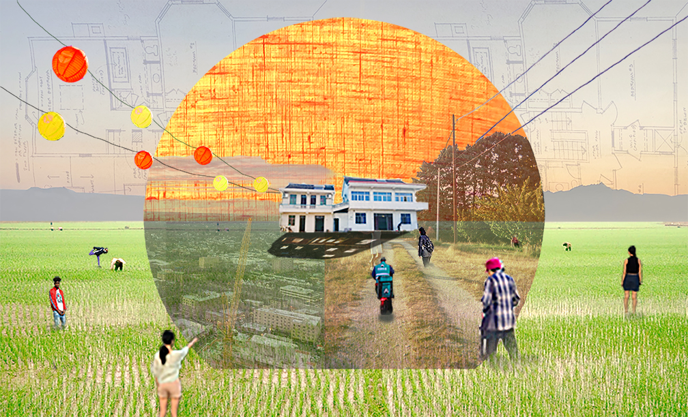
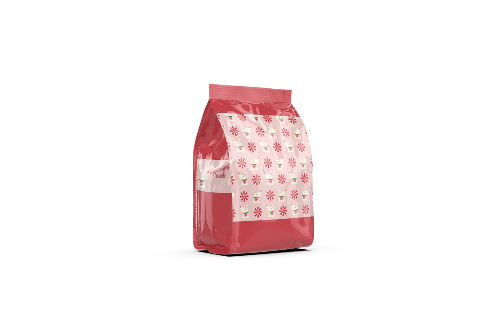

Photoshop: Home Collage

Illustrator: Logo Design

InDesign: Short Story Layout
Website currently under construction. Apologies if some areas look incomplete!
Photoshop Project: Home Collage
For this
project, the class was
tasked with creating a collage in Photoshop representing the place we called home. Torn between wanting
to represent my hometown of New Rochelle, NY or my grandparents’ home in rural China, I instead chose to
celebrate both.
The content of this collage was pulled from a variety of sources, including web images, personal
photographs, and different textures. All the people displayed were people I had previously photographed
in New York, and I isolated and placed them in a rice field image sourced from online to create both a
sense of displacement and homegoing. At the center of the collage sits my grandparents’ house in China,
with my house in New Rochelle as its shadow. Around the house is a portal-like shape encompassing both a
textured sun and a glimpse of the construction-filled cityscape of New York.
The collage as a whole questions the definition of home and belonging, celebrating the possibility of
feeling belonging with two starkly different cities.
Illustrator Project: Logo Design
This
project tasked the class with
designing (or redesigning) a logo and package pattern in Illustrator for a product of our choice.
Inspired by a sudden bout of holiday cheer in mid-October, I chose to create a logo for my favorite
festive snack–Peppermint Bark.
After sketching 30 different thumbnails and reiterating my top three designs, I eventually settled on a
design that was simple enough to serve as a functional logo, while also detailed enough to read as
peppermint bark. This was achieved through a literal pun on “bark” with the simple dog profile and a
festive color palette.


InDesign Project: Short Story Layout
This project tasked the class
with designing a layout for the Murakami short story, The Kingdom That Failed, in InDesign. We worked in
three 16x10 spreads, creating six 8x10 pages in which we were required to include the full body of text,
a minimum of two source images, and visible page numbers.
My resulting layout plays with text as image to illustrate the content of the story; for instance,
shaping the river described in the opening paragraph of the story or playing with the letter "Q"
throughout the spreads. Color and image is further employed to emphasize an modern, editorial-style design.